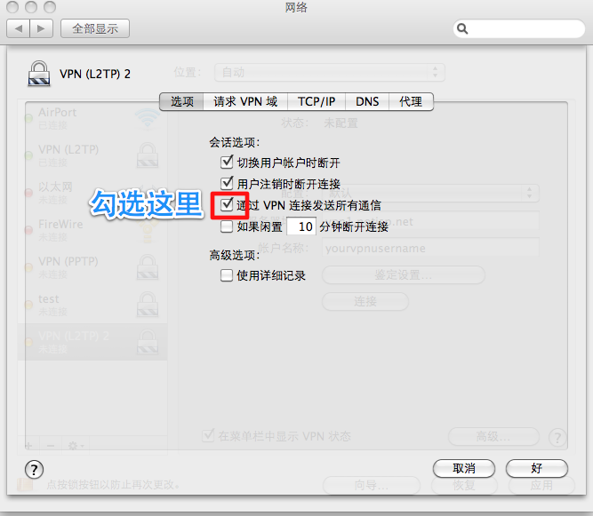

接口: VPN
VPN类型: 'Cisco IPSec' (Recommended) or 'L2TP over IPSec'
服务器地址: us.petersvpn.com
帐户名称: [Your account or guest account]
密码: [Your password or guest password]
共享的密钥(Shared Secret)： petersvpn
组别名称(Group Name): <空> (Empty)
其它: 默认
注意： L2TP必须在高级选项里勾选"通过VPN连接发送所有通信"。
